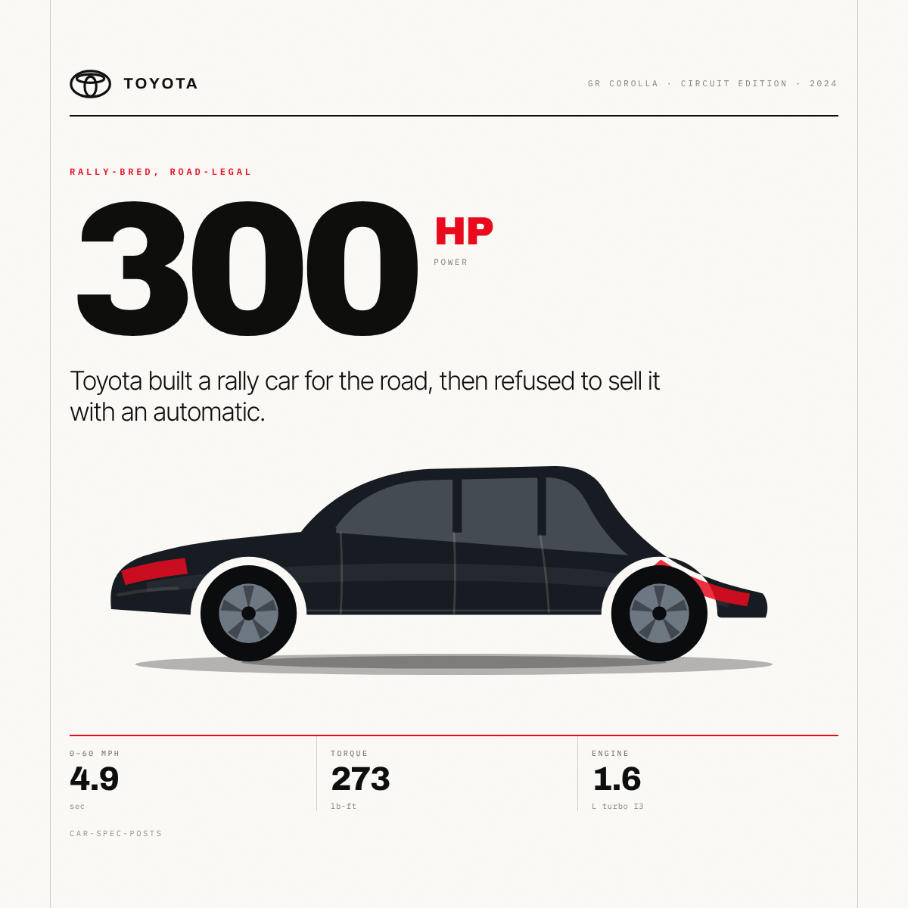
Rally-bred, road-legal. Toyota built a rally car for the road, then refused to sell it with an automatic.
Every poster in this set is a source article; each platform post below was planned,
drafted, reviewed and finalised from it by npm run posts. Tone is the author's base
voice (formality 5, opinionated 7) after each platform's
offset — which is why the same car argues its case three different ways.
Car spec posts · linkedin car-spec-posts · instagram @carspecposts · x @carspecposts
Derived from the 01 poster
· accent #EB0A1E

Rally-bred, road-legal. Toyota built a rally car for the road, then refused to sell it with an automatic.
Toyota built a rally car for the road, then refused to sell it with an automatic. Three cylinders. Three exhausts. One very …
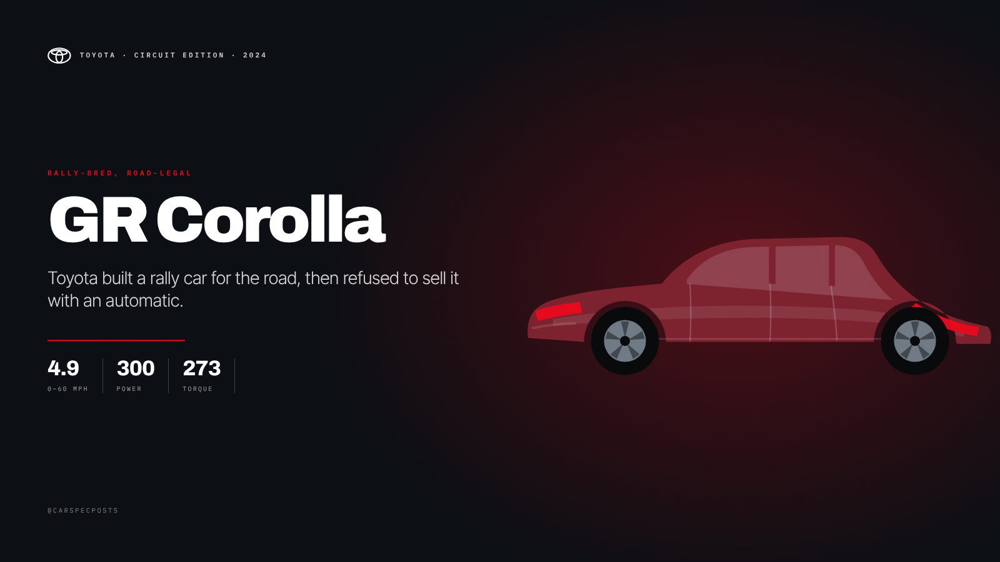
Toyota built a rally car for the road, then refused to sell it with an automatic. 300 hp · 273 lb-ft · 0–60 mph in 4.9 sec #GRCorolla #HotHatch
Derived from the 02 poster
· accent #E01A2B
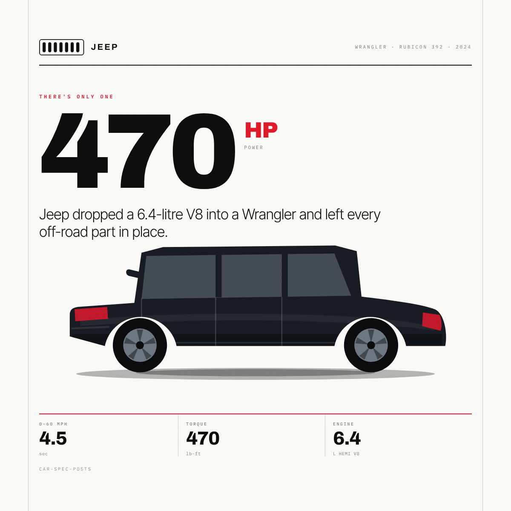
There is only one. Jeep dropped a 6.4-litre V8 into a Wrangler and left every off-road part in place.
Jeep dropped a 6.4-litre V8 into a Wrangler and left every off-road part in place. A 6.4-litre V8 where the four-cylinder us…
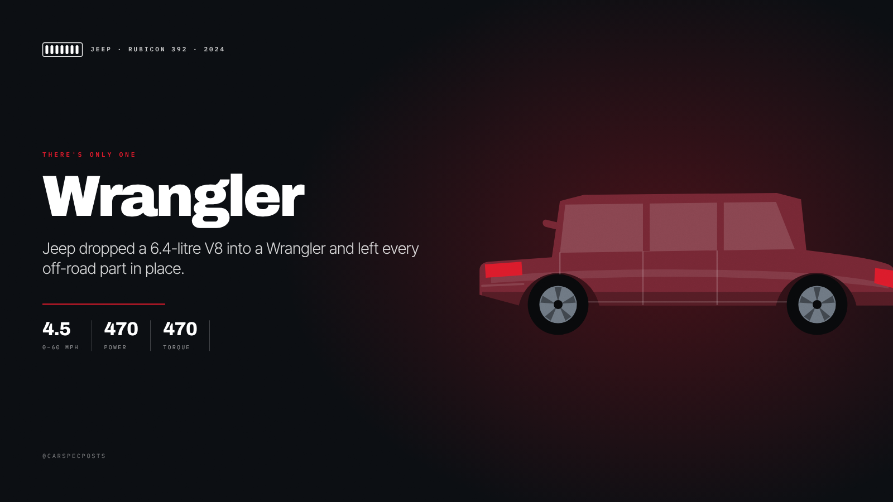
Jeep dropped a 6.4-litre V8 into a Wrangler and left every off-road part in place. 470 hp · 470 lb-ft · 0–60 mph in 4.5 sec #Wrangler #V8
Derived from the 03 poster
· accent #2F7BFF
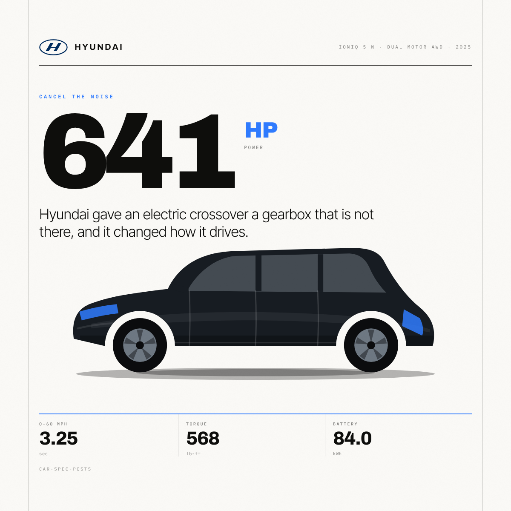
Cancel the noise. Hyundai gave an electric crossover a gearbox that is not there, and it changed how it drives.
Hyundai gave an electric crossover a gearbox that's not there, and it changed how it drives. 641 horsepower, and a simulated…
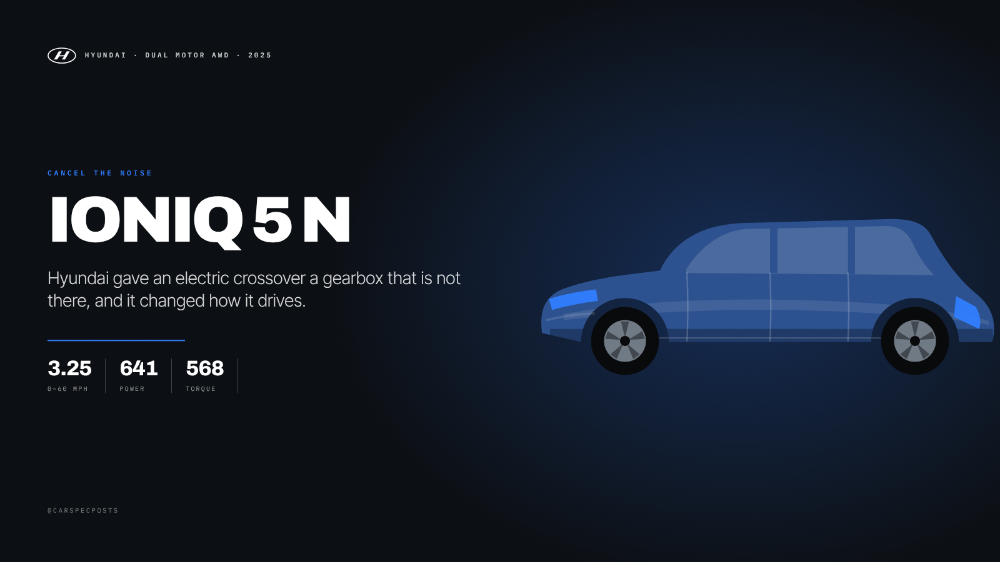
Hyundai gave an electric crossover a gearbox that's not there, and it changed how it drives. 641 hp · 568 lb-ft · 0–60 mph in 3.25 sec #IONIQ5N #EV
Derived from the 04 poster
· accent #CC0000
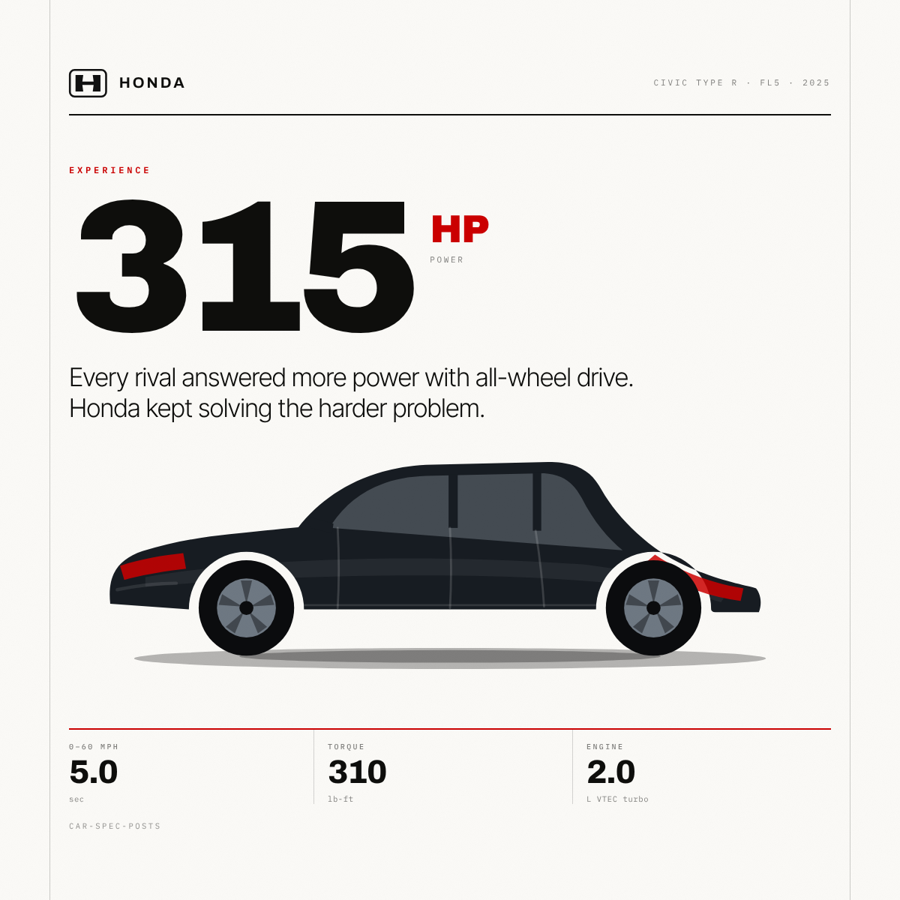
Experience. Every rival answered more power with all-wheel drive. Honda kept solving the harder problem.
Every rival answered more power with all-wheel drive. Honda kept solving the harder problem. The front-wheel-drive benchmark…
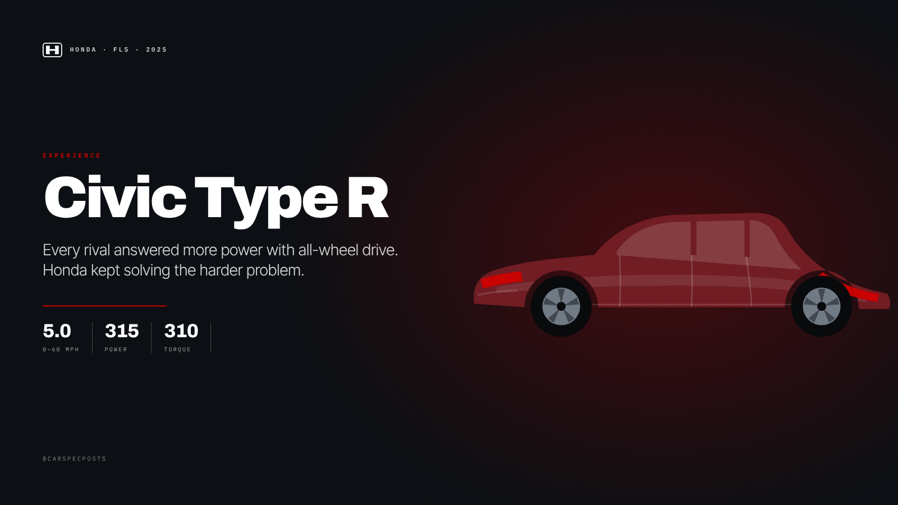
Every rival answered more power with all-wheel drive. Honda kept solving the harder problem. 315 hp · 310 lb-ft · 0–60 mph in 5.0 sec #CivicTypeR #FWD
Derived from the 05 poster
· accent #7FD4FF
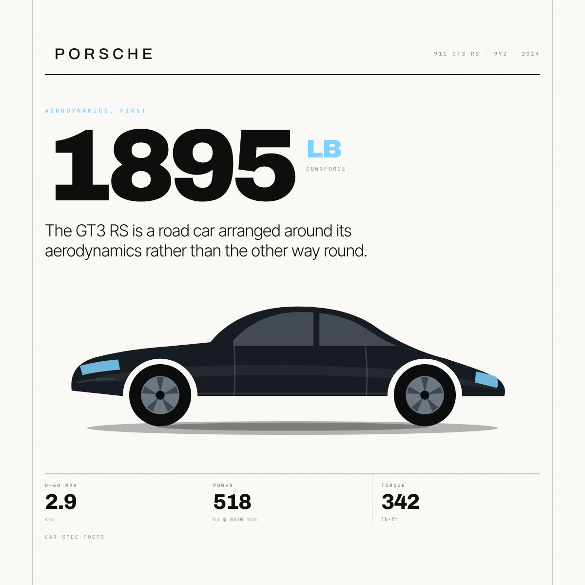
Aerodynamics, first. The GT3 RS is a road car arranged around its aerodynamics rather than the other way round.
The GT3 RS is a road car arranged around its aerodynamics rather than the other way round. A road car with a drag reduction …
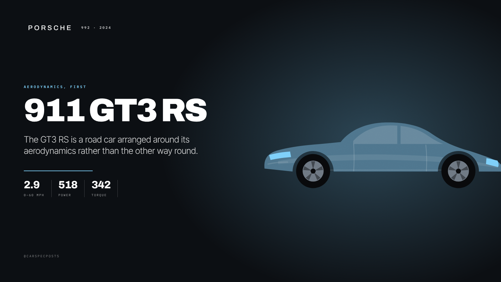
The GT3 RS is a road car arranged around its aerodynamics rather than the other way round. 518 hp · 342 lb-ft · 0–60 mph in 2.9 sec #911GT3RS #Porsche
Derived from the 06 poster
· accent #0066B1
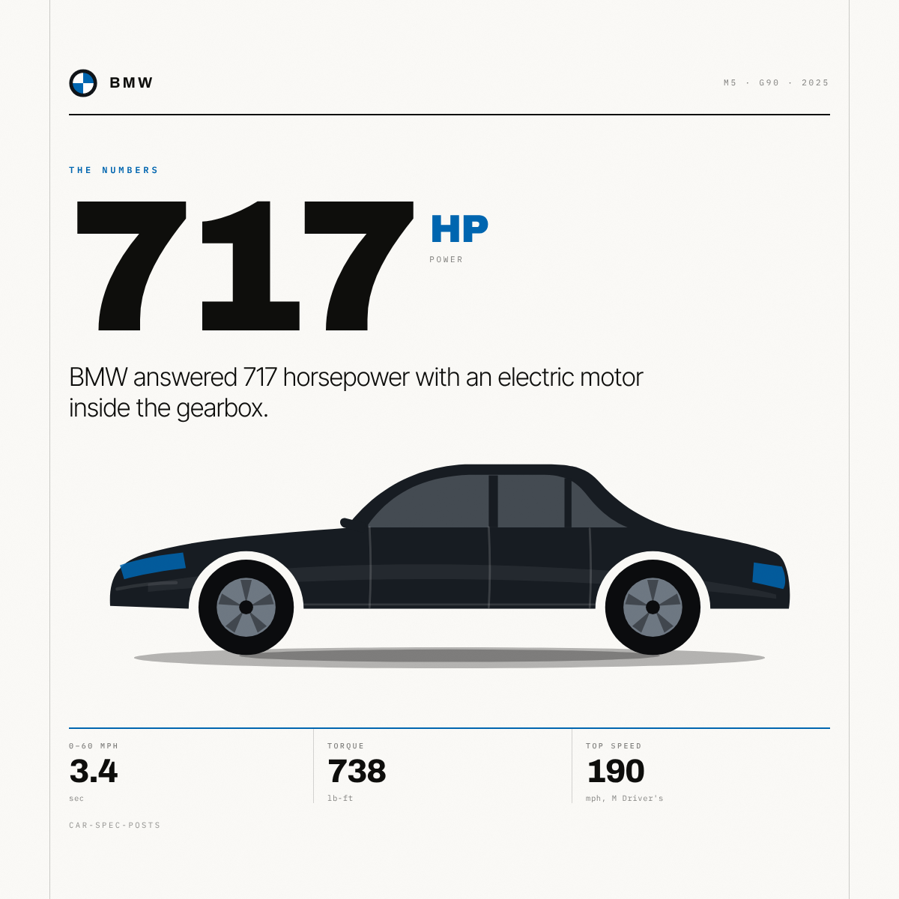
The numbers. BMW answered 717 horsepower with an electric motor inside the gearbox.
BMW answered 717 horsepower with an electric motor inside the gearbox. Seven hundred and seventeen horsepower, in a saloon w…
BMW answered 717 horsepower with an electric motor inside the gearbox. 717 hp combined · 738 lb-ft · 0–60 mph in 3.4 sec #BMWM5 #Hybrid
Derived from the 07 poster
· accent #B8925A
Two natures. AMG added rear-axle steering and two rear seats, then made the tourer harder-edged rather than softer.
AMG added rear-axle steering and two rear seats, then made the tourer harder-edged rather than softer. A grand tourer that f…
AMG added rear-axle steering and two rear seats, then made the tourer harder-edged rather than softer. 577 hp · 590 lb-ft · 0–60 mph in 3.1 sec #AMGGT #Mercedes
Derived from the 08 poster
· accent #E8552D
Still naturally aspirated. Ford kept the atmospheric V8 and the manual gearbox almost every rival has dropped.
Ford kept the atmospheric V8 and the manual gearbox almost every rival has dropped. Five litres, eight cylinders, no turboch…
Ford kept the atmospheric V8 and the manual gearbox almost every rival has dropped. 500 hp · 418 lb-ft · 0–60 mph in 4.1 sec #Mustang #DarkHorse
Derived from the 09 poster
· accent #005A2B
Wade, then arrive. Land Rover put a supercharged V8 in the Defender without giving up anything that makes it one.
Land Rover put a supercharged V8 in the Defender without giving up anything that makes it one. Thirty-five inches of water i…
Land Rover put a supercharged V8 in the Defender without giving up anything that makes it one. 518 hp · 461 lb-ft · 0–60 mph in 4.9 sec #Defender #LandRover
Derived from the 10 poster
· accent #CC0000
Delivery ticket. A saloon that runs the quarter mile in the nines and still takes four adults and the luggage.
A saloon that runs the quarter mile in the nines and still takes four adults and the luggage. Under two seconds to sixty, wi…
A saloon that runs the quarter mile in the nines and still takes four adults and the luggage. 1020 hp · 0–60 mph in 1.99 sec* · 200 mph #ModelS #Plaid